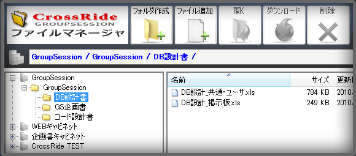

|
|  |
|
|---|
|
|
|
|
|
|
| OS | Windows XP SP3 Windows Vista SP1 以降 Windows 7 Windows 8 |
|---|---|
| CPU | Pentium3 - 1GHz以上推奨 |
| メモリ | 256M以上推奨 |
| HD使用容量 | 10MB以上 |
| GroupSession 環境 |
メイン＞管理者設定＞プラグインマネージャーよりWEB APIプラグインを「使用プラグイン」に設定してください。 |
| ソフトウェア 環境 |
Microsoft .NET Framework 4.0がインストールされている必要があります |
|